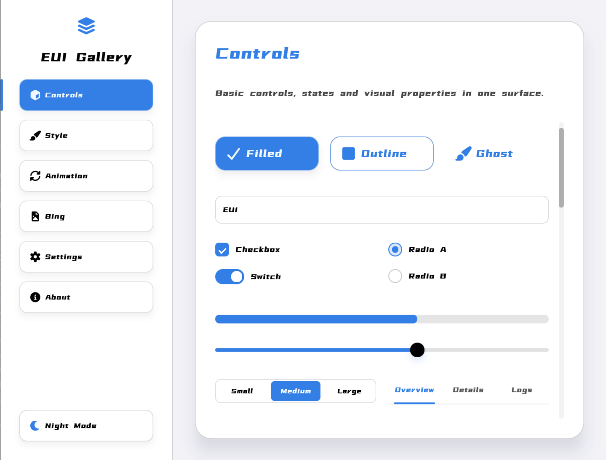
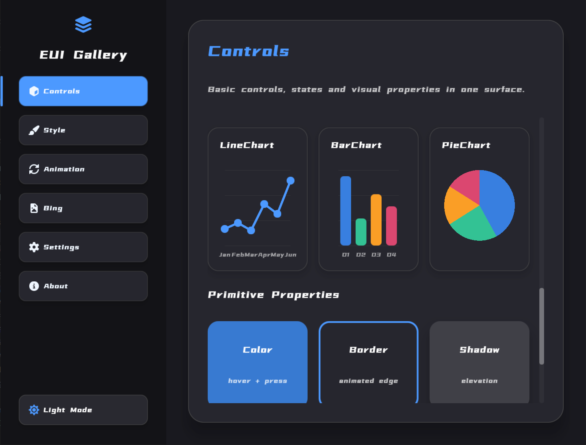
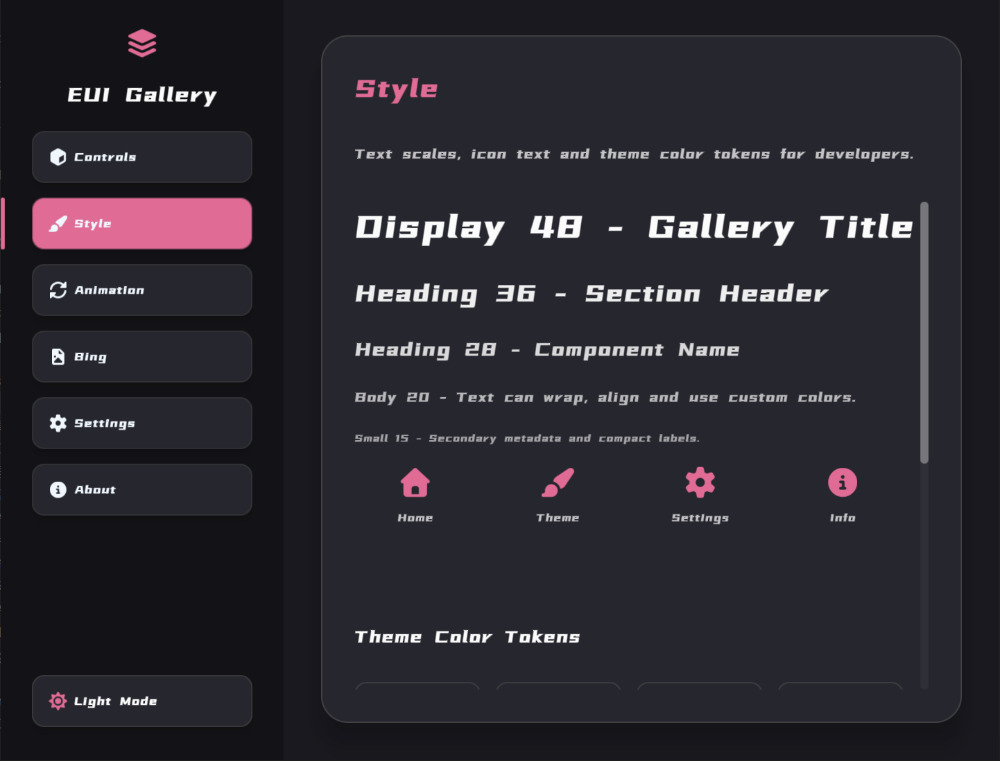
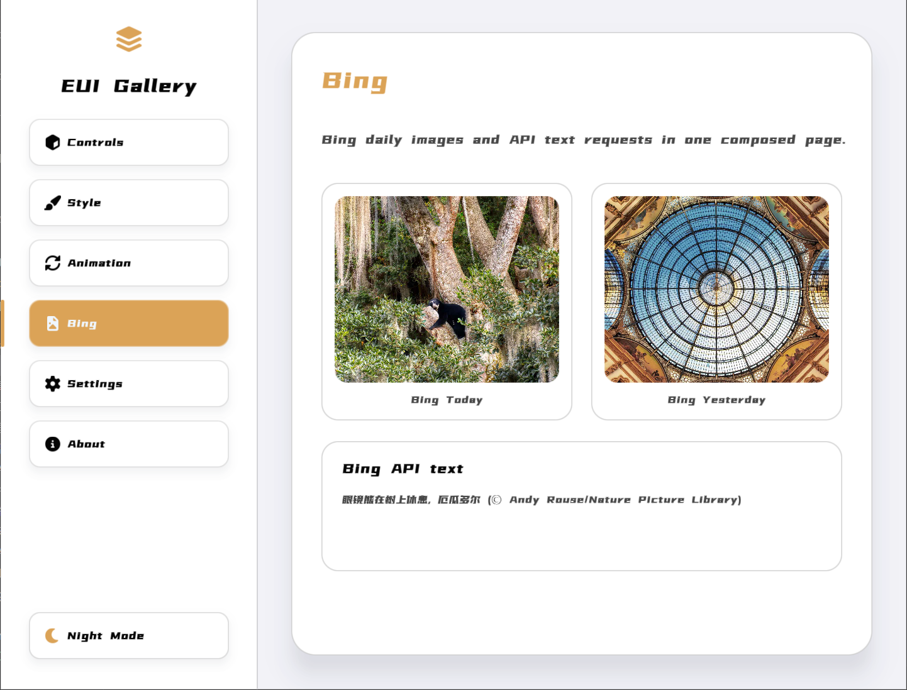

1. 项目概览
EUI-NEO 用于构建桌面应用界面。它把常用控件、布局方式、主题风格、动效反馈和数据展示整理成一套统一的 UI 能力，适合工具软件、数据面板、控制台、图形工作台和定制化客户端。
2. 开始使用
如果你想快速了解项目，可以从官网、界面示例和本文档开始。需要进一步查看项目动态与仓库内容时，可以进入 GitHub。
3. 核心优势
EUI-NEO 的核心优势包括：高性能、低占用、强自定义、开箱即用。
| 优势 | 说明 | 适用场景 |
|---|---|---|
| 高性能 | 适合持续刷新、频繁交互和复杂页面，界面反馈更利落。 | 控制台、仪表盘、图形工具 |
| 低占用 | 结构轻量，资源边界清晰，适合长期运行。 | 常驻工具、后台面板、客户端 |
| 强定制 | 主题、布局、组件、图片、文字和图形元素都能组合调整。 | 品牌化界面、定制工具、专业软件 |
| 开箱即用 | 常用控件、弹层、选择器、数据表和图表都有现成能力。 | 快速原型、管理页面、功能面板 |
4. 组件能力
组件覆盖桌面应用常见需求，既能做基础操作区，也能做设置页面、数据面板和弹窗交互。
- panel 面板
- text / label 文本
- image 图片
- 主题化背景、边框、圆角和阴影
- button 按钮
- input 输入框
- checkbox / radio 选择
- switch、slider、progress、tabs
- dialog 对话框
- toast 提示消息
- contextMenu 右键菜单
- dropdown 下拉菜单
- datepicker 日期选择
- timepicker 时间选择
- colorpicker 颜色选择
- dataTable 数据表
- linechart 折线图
- barchart 柱状图
- piechart 饼图
- 侧栏导航
- 卡片内容区
- 工具栏
- 设置页和数据页
5. 自定义方式
EUI-NEO 的自定义不止是换颜色。它允许从主题、布局、组件状态和图形元素多个层面塑造界面风格。
主题
主题用于统一颜色、边框、阴影、圆角、字段样式和按钮状态。默认主题提供蓝、白、深蓝三种核心色，也可以按项目需求替换。
布局
页面可以组织成侧栏、顶部栏、内容区、卡片区、弹窗区和数据区。不同密度的信息界面可以用不同布局表达，避免所有页面长得一样。
组件状态
按钮、开关、滑块、标签页和菜单都需要 hover、pressed、selected、disabled 等状态。统一状态规则能让界面更稳定，也更容易维护。
视觉资产
图片、图标、文字和基础图形可以混合使用。对于定制工具或品牌化应用，视觉资产是拉开辨识度的重要部分。
6. 性能与占用
桌面界面的性能不只看首屏加载，还要看长时间运行、频繁输入、快速切换和持续刷新时是否稳定。
7. 界面示例
以下示例包含控件、主题、动画和组合页面效果。




8. 技术基础
EUI-NEO 基于 C++17、OpenGL 和 GLFW。页面使用声明式方式描述，运行层统一处理布局、动画、事件、局部刷新和缓存。
这套结构的重点是分清职责：上层负责描述界面目标，运行层负责让界面在每一帧正确呈现。这样既能保持代码组织清楚，也能集中优化渲染和交互反馈。
性能基础：OpenGL 图形加速 + 局部刷新 资源控制：轻量结构 + 清晰资源边界 界面组织：声明式描述 + 统一运行层 扩展方向：主题、组件、布局、图形资产可组合
9. 完整文档
完整技术文档。
在 GitHub 查看 EUI-NEO
仓库主页提供项目更新、版本内容和更多信息。